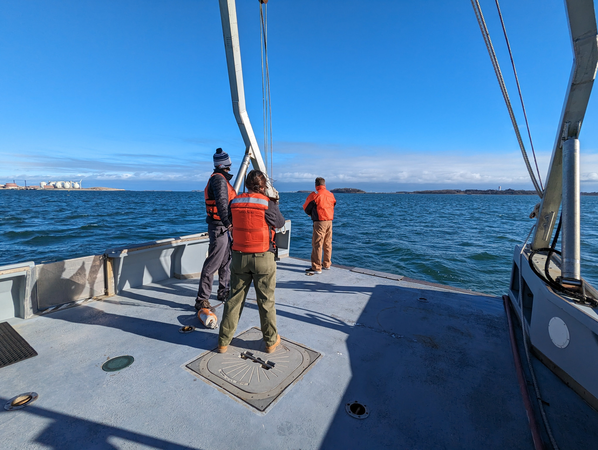
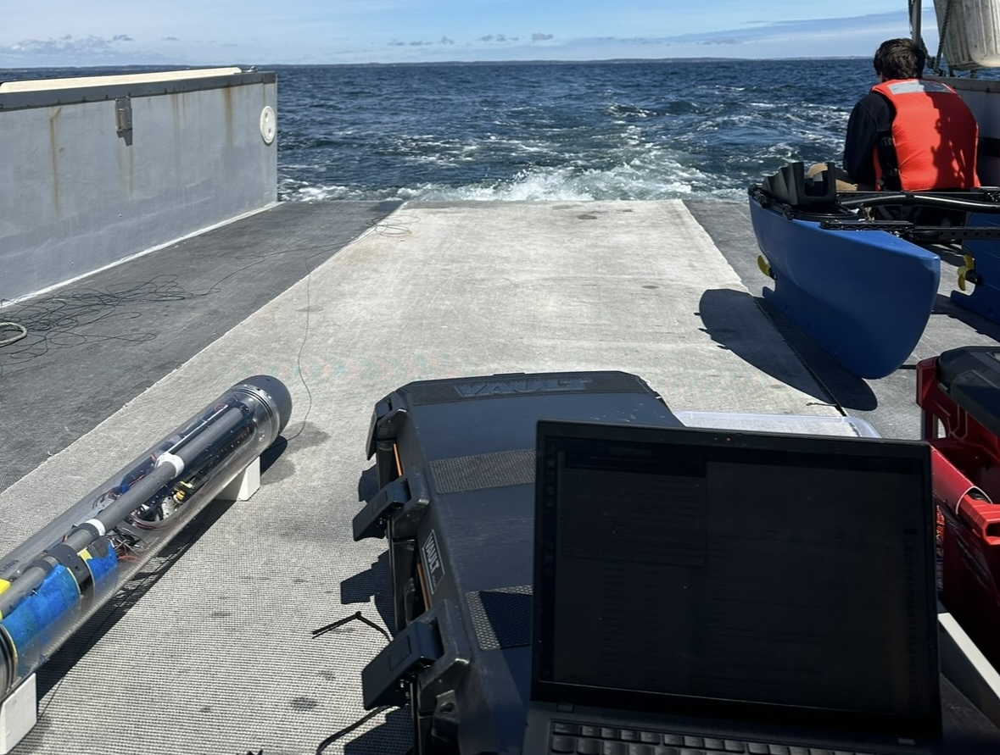
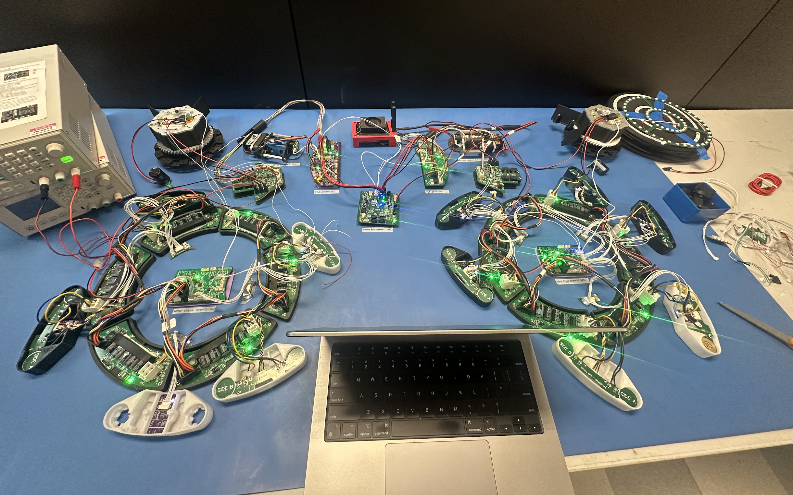
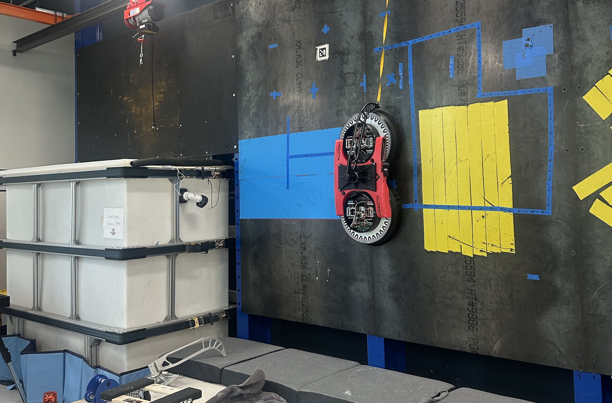

I was an Embedded Software Engineering Co-op at Apeiron Labs in Cambridge for 6 incredible months!
I worked primarily on AUV firmware, developing and expanding on sensor drivers for GPS, CTD, IMU, and PHT using interrupts, UART, and I2C; and contributing to the team's second generation board bringup. Additionally, I worked a bit on some Python for higher level tooling and was a part of deployment and operation of the vehicle offshore.

Office looks a little different sometimes...

Offloading data from the glider, David Bowie , on the ride back. A Blueboat, Ziggy Stardust, sits in the background.
My next co-op was as a Firmware and Sensor Engineer at Fleet Robotics!
At Fleet, I started off helping with IMU and inductive sensor drivers and parts research. My major contribution was work on the second generation vehicle's adhesion system, for which I wrote firmware, drivers, state machine, and current/voltage data handling using DMA, interrupts, and I2C.

Hardware in the loop (HIL) set up and testing of previous system

One of the robots, Chiquitia, in the lab.